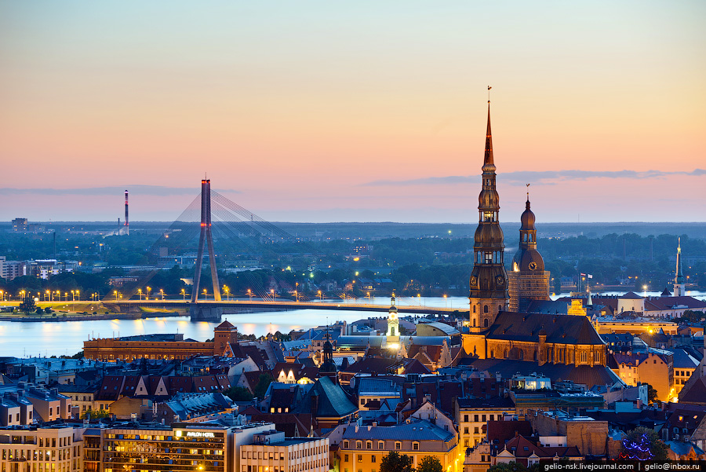

Interesantie fakti par rīgu
1.Mūsdienu Latvijas galvaspilsēta ilgu laiku bija daļa no Krievijas impērijas, bet pēc tam PSRS, būdama viena no lielākajām un nozīmīgākajām ostām.
2.Viss Rīgas vēsturiskais centrs ir pilnībā atpazīstams. UNESCO Pasaules mantojuma sarakstā.
3.Tāpat kā Latvijas otra lielākā pilsēta Daugavpils, tā atrodas Rietumu Dvinas upes krastos, ko šajā valstī sauc par Daugavu (interesanti fakti par Latviju).
| Pasākums | Apraksts |
|---|---|
| Saxophonia. Šnē un džezroks (16 FEB 19:00) | Saistošā žanra simfodžeza pirmsākumi meklējami 1920. gados, kad Ņūorleānas džezs tika ietērpts simfoniskā orķestra skanīgajās drānās un spoži uzmirdzēja uz filharmonijas skatuves. |
| Izrāde "Notikums Višī pilsētā" (16 FEB 19:00) | Francija, Višī, 1942. gads. Nelielā telpā salasījusies visai jestra kompānija: mākslinieks, elektriķis, komersants, viesmīlis, aktieris, austriešu kņazs. |
| Kalnciema kvartāla tirgus (18 FEB 10:00 - 16:00) | Kalnciema kvartāla tirdziņos ik sestdienu Latvijas zemnieki un mājražotāji ir sarūpējuši vietējos labumus, bet amatnieki – unikālus darinājumus. |
| Izstāde "Lēciens nākotnē. 60. gadu mode" (18 FEB - 31 OKT) | zstāde piedāvā daudzpusīgu ieskatu šīs desmitgades modes svarīgākajās tendencēs – no kosmosa tēmas līdz hipijiem. Ietekmīgāko Francijas, Lielbritānijas, Itālijas un ASV dizaineru radītos tērpus papildina 60. gadu rotas un aksesuāri. |